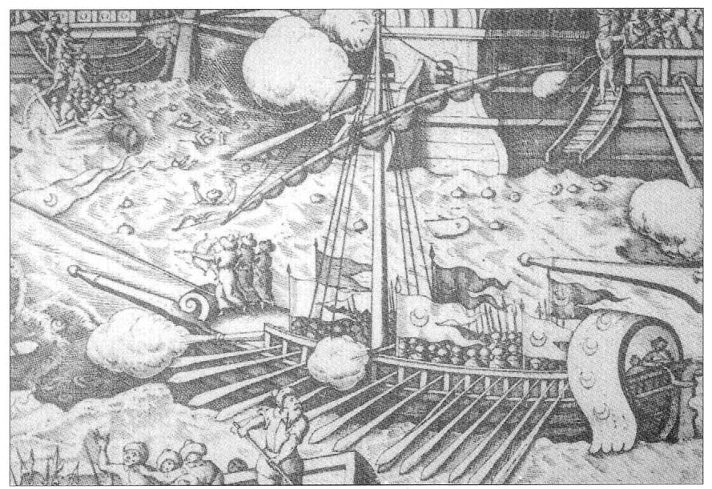
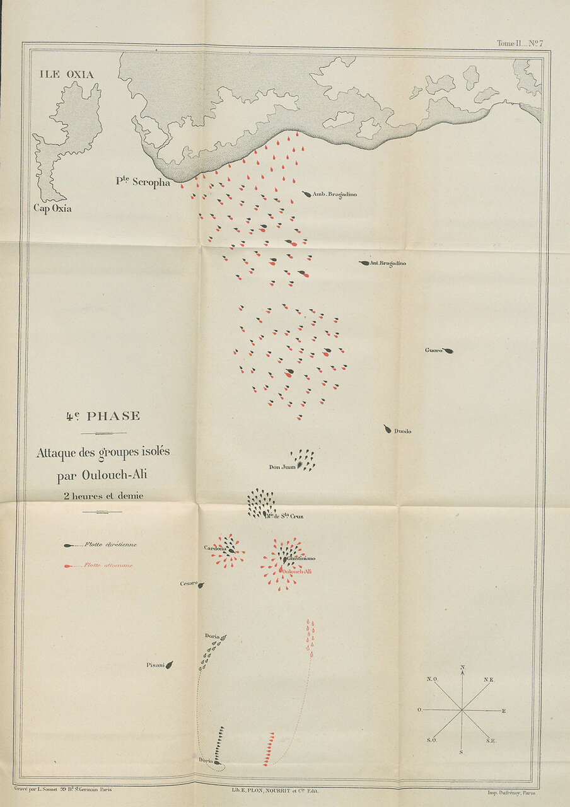

Джованни Андреа Дориа против Улудж Али: за ошибки надо платить
Сыновьям Сергею и Михаилу в день рождения
Продолжим наблюдение за христианской и мусульманской эскадрами южного фланга, которые двигались курсом на юг.
Улудж Али отдал очередную команду своим кораблям приостановить движение и произвести залп из всех носовых орудий галер по кораблям противника. Густой дым от выстрелов затянул все вокруг. Воспользовавшись этой завесой, алжирский корсар повернул свою эскадру на противоположный курс. Дориа не сразу заметил маневр противника, когда же дым рассеялся, то генуэзец осознал всю опасность предпринятого пашой хода: под угрозой уничтожения оказались все отставшие от эскадры галеры, которые поодиночке не могли противостоять атаке монолитного строя османов.

Турецкий галиот атакует корабли христиан
Джованни Андреа Дориа отреагировал мгновенно. Он приказал двенадцати своим самым быстроходным галерам поднять паруса и, обойдя галеас Пьеро Пизани, попытаться догнать эскадру Улудж Али, пользуясь благоприятным западным ветром. Алжирец, не испугавшись орудий второго венецианского галеаса, которым командовал Андреа де Песаро, изменил курс на норд-вест и вступил в бой с одиночными галерами христиан. Может быть, целью Улудж Али с самого начало было стремление растащить боевые порядки христиан, пользуясь разнородностью их сил, различием тактических характеристик галер, входящих в состав южной эскадры христиан, а не обход их с фланга? Не знаю, в любом случае был ли это задуманный заранее маневр или решение пришло в результате оценки сложившейся тактической обстановки, Улудж Али с меньшими силами получил позиционное превосходство в бою над христианами. Историки позже подсчитали, что на 16 христианских галер (12 кораблей из Венеции, две испанские галеры из Сицилии, одна из Савойи и одна галера папы, весь отряд во главе с Джованни ди Кардона на сицилийской Капитане) приходилось 75 кораблей противника.

Теперь каждая христианская галера должна была вести бой с четырьмя-пятью галиотами мусульман. Галиоты бейлербея Алжира были достаточно крупными быстроходными кораблями с опытными экипажами.
Потери были очень велики с обеих сторон. Взорвалась и пошла ко дну венецианская галера Cristo Risuscitato капитана Бенедетто Соранцо вместе со всем экипажем и высадившимися на нее турецкими абордажными партиями. Уцелевшие свидетели сообщали, что Соранцо, тяжело раненный тремя ударами топора, сам поджег порох на своей галере. Затонула также галера Palm из Кандии.
Вместе с большей частью своих экипажей погибли капитаны Джироламо Контарини, Маркантонио Ландо, Маркантонио Паскуа-Уго, Джакомо ди Мезо, Джорджио Корнер и Пьетро Буа. От взрыва галеры Соранцо загорелась флагманская Капитана ди Кардона, сам капитан получил сильнейшие ожоги. Понесли большие потери и фактически были парализованы еще несколько галер. Их экипажи сдались на милость победителя.
Помощь своим галерам попытались оказать командиры венецианских галеасов, приданных южному крылу христиан. Ближе всех к атакованным галерам оказался галеас Андреа да Чезаро, менее, чем в 300 метрах, что позволило ему открыть огонь по кораблям турецкой эскадры. Второй галеас был еще на буксире у галер, тащивших его в назначенную точку, в 700 метрах за кормой первого галеаса, и не смог поддержать огнем своих товарищей.
В эскадре Джованни Адреа Дориа осталось всего 35 галер. Тем не менее он изменил курс на ост-норд-ост и достаточно быстро достиг места боя. Ему удалось отбить все захваченные турками галеры, кроме двух затонувших. Улудж Али попытался воспрепятствовать действиям Дориа огнем артиллерии со своих галер, однако сам ввязываться в бой не стал и во главе отряда из 30 кораблей взял курс на север, надеясь ударом во фланг центральной эскадры христиан оказать помощь своему главнокомандующему Али паше. Но было слишком поздно. Али паша был уже мертв. Осознав, что над ним больше нет командиров, Улудж Али решил дальше действовать самостоятельно.
Продолжение последует.